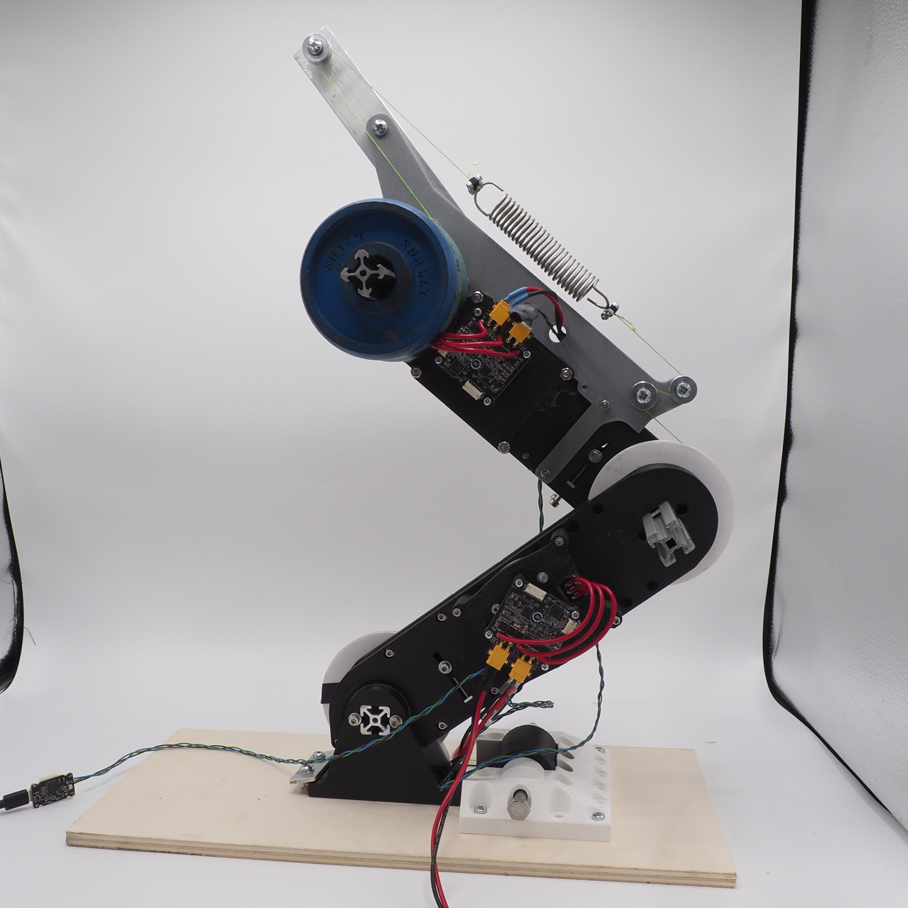
Robotic leg
A robotic leg to validate my codesign optimisation. Having 3 actuators (2 QDDs and 1 bi-articular SEA) and a payload of 3 kg.
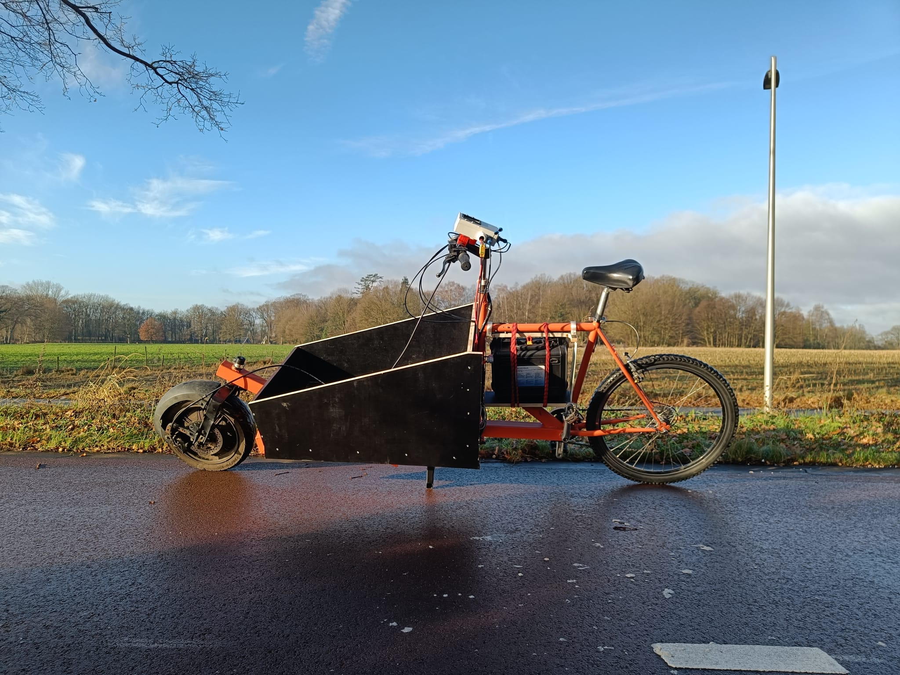
Electric cargobike
An electric cargobike from a custom welded cargobike frame, hub motor, 50V lithium battery.
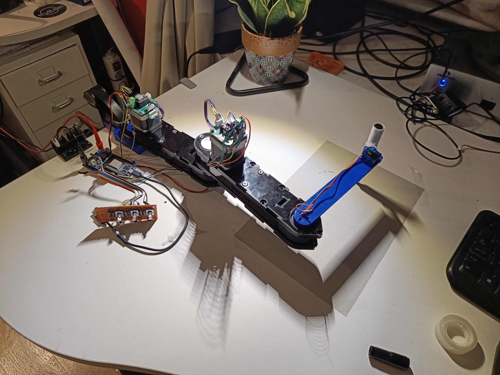
Simple SCARA
A simple SCARA made as a simple pen plotter, and just to play around with. Made from laser cut acrylic, stepper motor with custom stepperdriver PCBs and an ESP32.
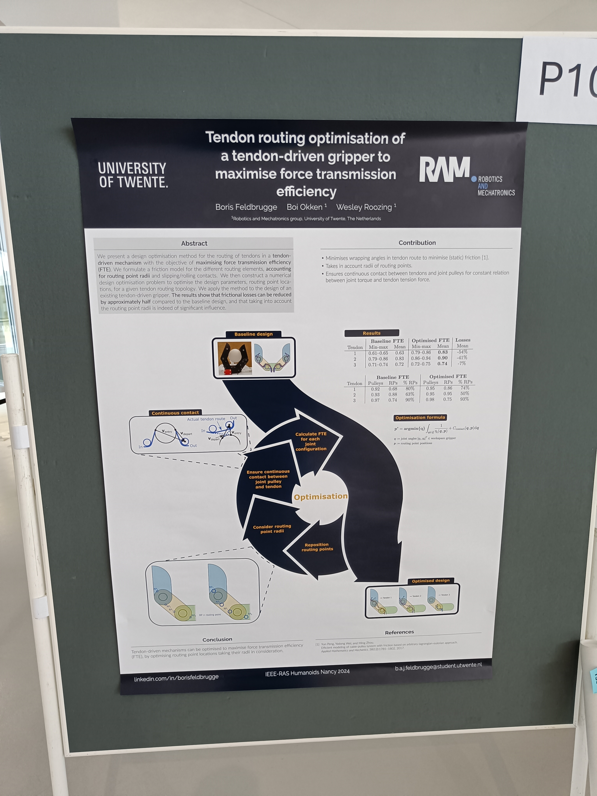
BSc thesis
Optimised the tendon routing of a robotic gripper to reduce friction. It is published at IEEE-RAS HUMANOIDS 2024, paper can be found here: ieeexplore.ieee.org/abstract/document/10769817

Driving couch
I think the GIF speaks for itself, one of the most fun projects. The couch can steer with differential steering as the left and right side of the couch have a motorized wheel.
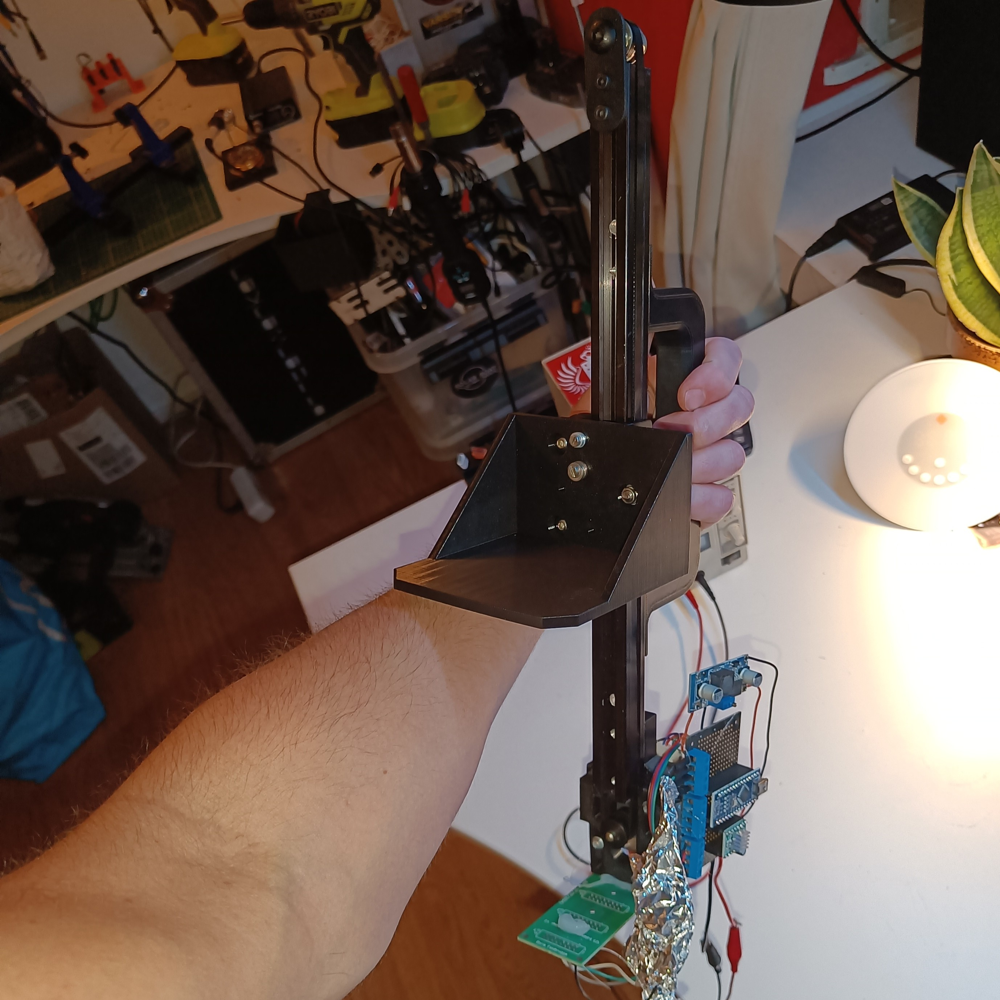
Coffee mug stabilizer
Linear rail to hold a coffee mug vertically stable.
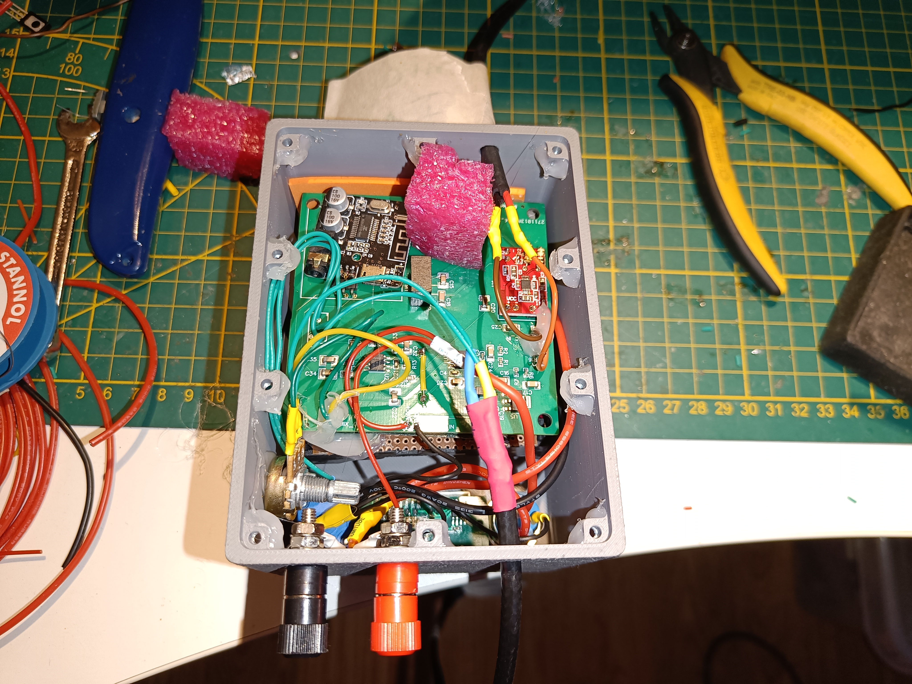
Bluetooth & microphone amplifier
A bluetooth and microphone mixer/amplifier to use in a rowing boat.
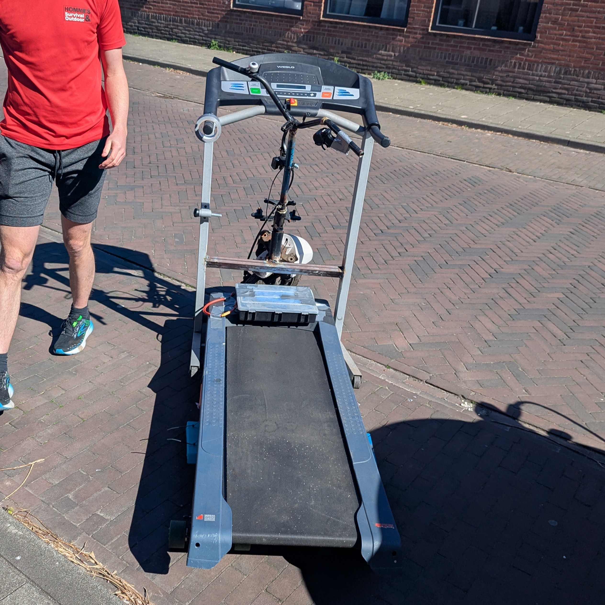
Motorized treadmill
Made as a joke to break my 5km running PR. The treadmill had the electronics of the driving couch and I welded the steering part of an old moped. It could reach speeds of up to 22km/h!
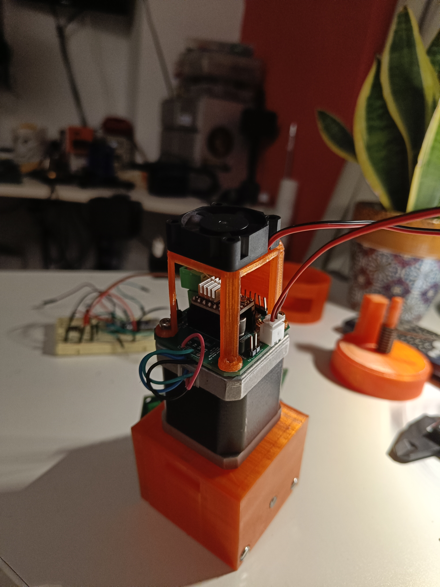
Custom stepper driver PCB
A custom PCB to make stepper motor projects easier by mounting all driver components on the back of the stepper motor. Has a stepper driver, 5V regulator for arduino, endstop switch inputs and a fan to cool the driver.
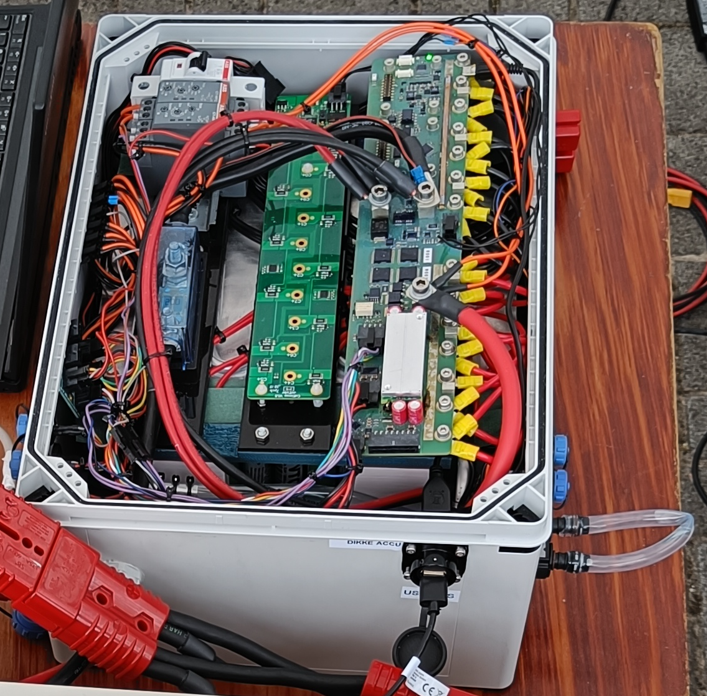
Solarboat Li-ion Battery
Made a 12s13p li-ion battery for our solar racing boat, it was capable of 200A peak. The main goal was reliability so aim was to make the battery as robust and organized as possible. At the time it was the only watercooled battery in competition which worked in our favour in the heat in Monaco.
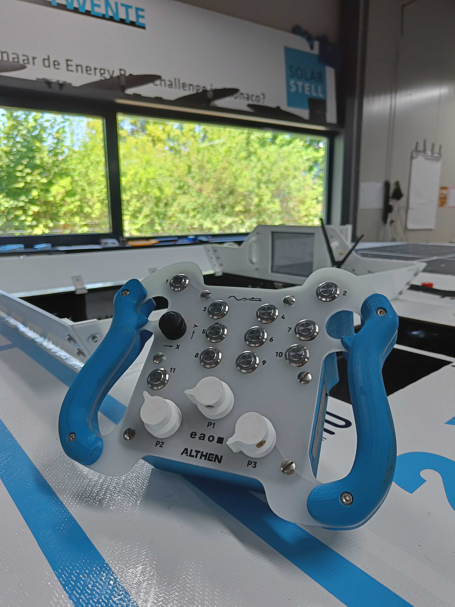
Steeringwheel PCB Solar Boat Twente
A custom PCB for our solar raceboat. We had the idea to make an F1 like steering wheel such that the pilot could control everything in the boat with this steering wheel. The PCB contained an arduino, shift registers to handle all the in- and outputs and a CAN interface to the rest of the boat.
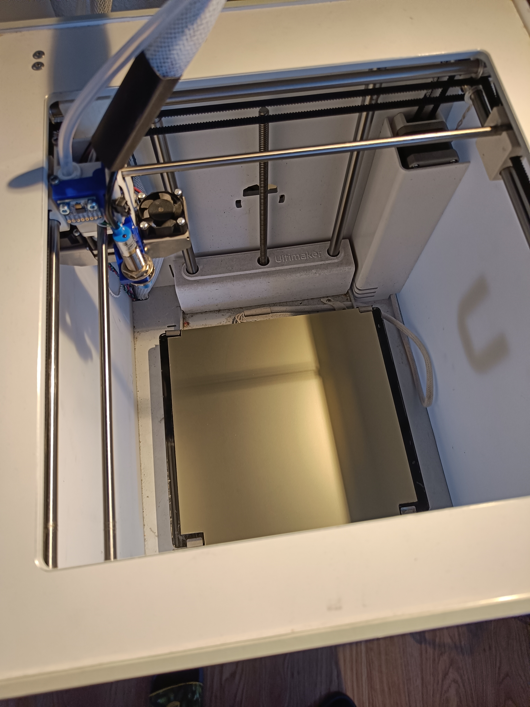
Ultimaker Klipper printer
Converted an old Ultimaker 2+C to a printer running klipper with a raspberry pi. Added: accelerometer on print head for input shaping, inductive probe on print head for auto bed leveling and a PEI flexible printbed.
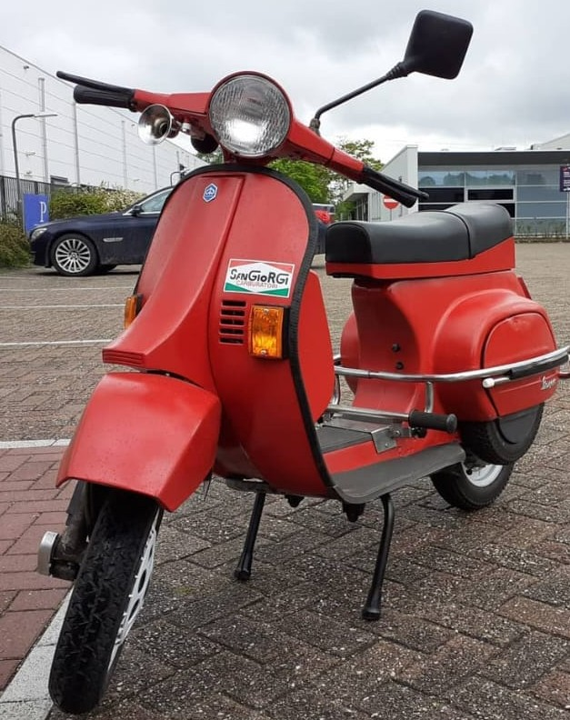
Vespa PK 50 XL
Bought an old Vespa PK 50 XL in parts and renovated it.
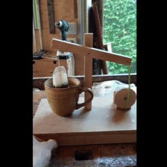
Automatic tea bag dipper
Made an automatic tea bag dipper that does an outstanding job of dipping tea bags!
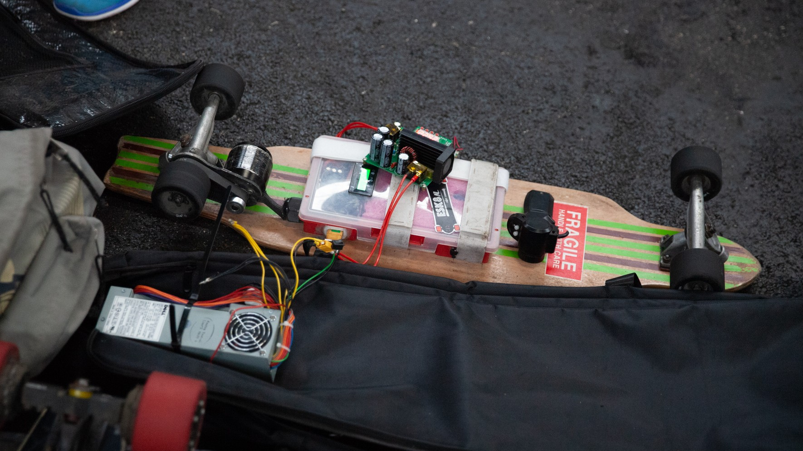
Electric longboard V1
The first electric longboard I made! It had a range of ~8km and topspeed of 27km/h. Made with cheap parts.